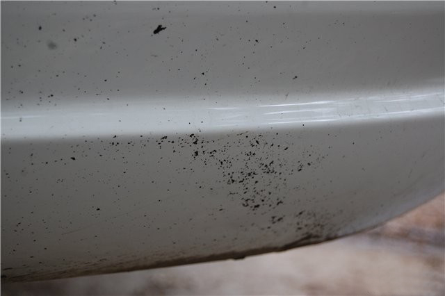
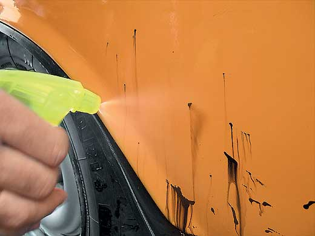
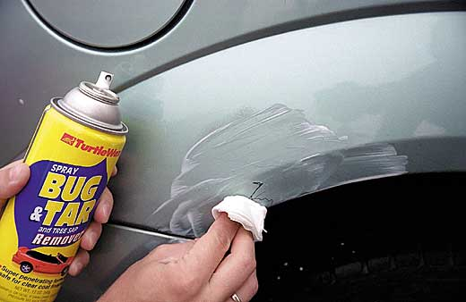

Битумные пятна образуются на кузове автомобиля после езды по свежевыложенному асфальту. Битум рекомендуется удалять как можно скорее, потому как после некоторого времени вещество въедается в кузов автомобиля и оставляет после себя невыводимые пятна. Некоторые владельцы машин пытаются справляться с ними самостоятельно: например, чистить кузов бензином или керосином, однако данный метод можно считать варварским: после этого на кузове вашей машины практически не остается защиты, и даже мойка и полировка не спасут его.
Следы от битума могут появиться зимой, так как шипованная резина и противогололедные реагенты способствуют образованию трудноудаляемого слоя, однако летом пятна от битума появляются намного чаще. Усугубляет ситуацию то, что дорога сильно нагревается от солнца, а горячий битум быстрее проникает в глубокие слои лакокрасочного покрытия и чистится из-за этого еще сложнее.
Удаление битумных пятен производится специальными средствами, так как обычной мойки (ни ручной, ни бесконтактной) недостаточно для подобных загрязнений.
Чистку кузова от битума выполняют практически все автокомплексы.
Наномойка Антидождь Инновационный автошампунь Полировка «Жидкое стекло»